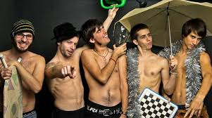
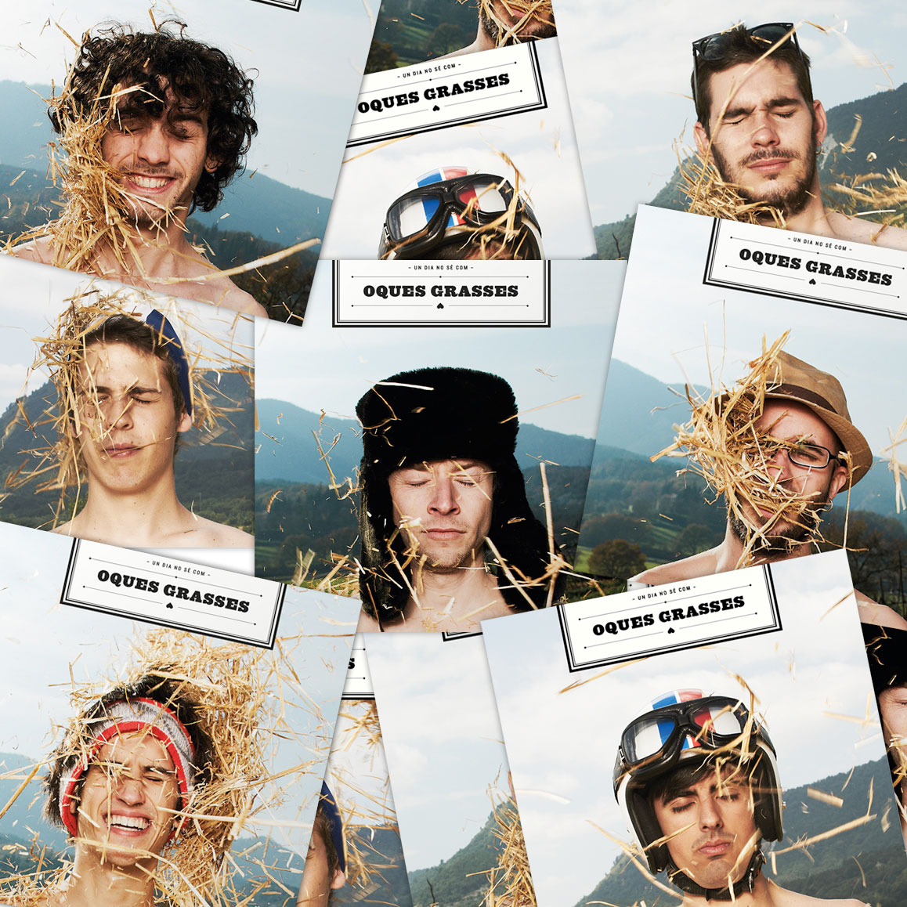
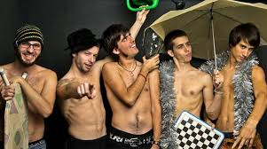
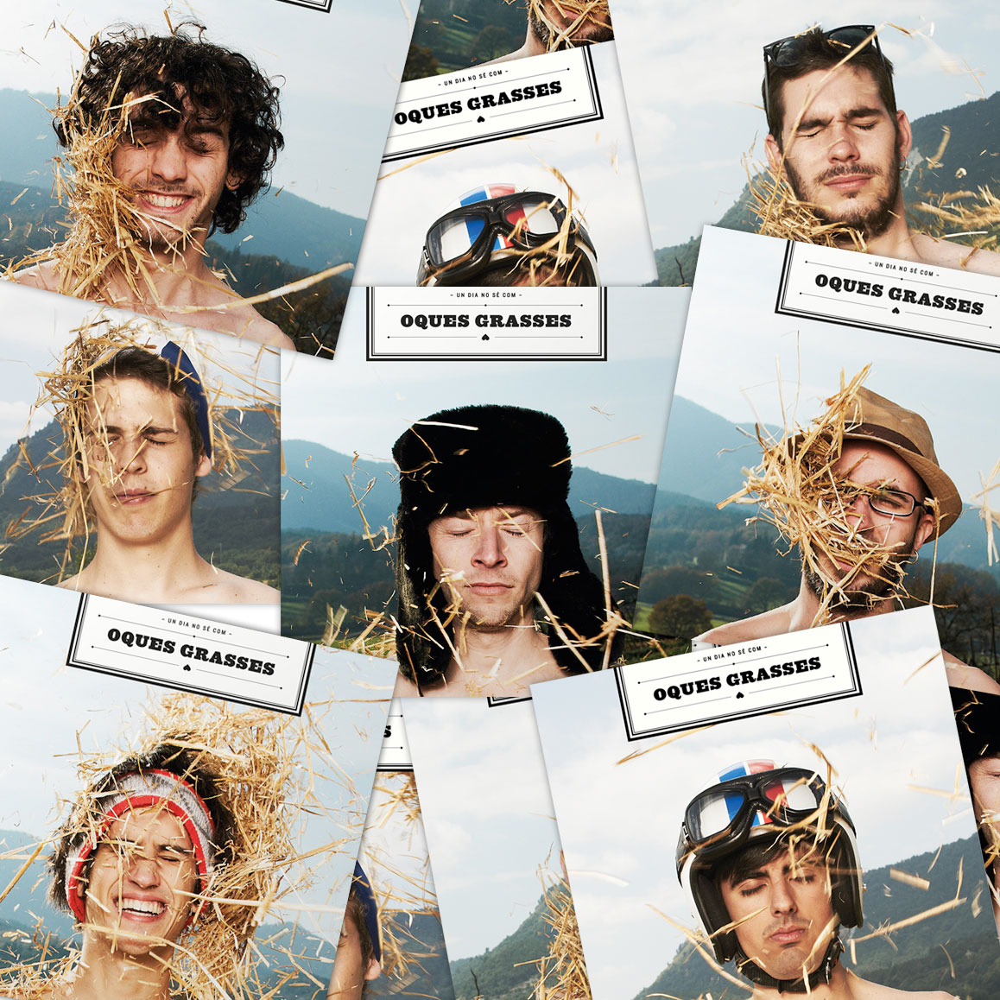

Dades d'oques Grasses
Concerts mitics
"Qualsevol concert amb ells es un gran comboi"
Fans d'oques Grasses

Palau Sant Jordi
Concert emblemàtic
Més informació
Concert València
Vivers de València.
Més informació
Palafrugell
Festival a Palafrugell.
Més informació
Xàtiva
Concert emblemàtic
Més informacióDades interessants
- Concerts
- +1.000
- Cançons
- 85
- Integrants
- 7
- Albums
- 11
Cançons de Oques Grasses
Bye Bye
Aquesta cançó parla de la ruptura d'una relació de parella. La cançó és optimista i parla de la importància de seguir endavant i de no mirar enrere
Fans del Sol
Aquesta cançó és un himne a la vida i a la felicitat. La cançó parla de la importància de gaudir del moment present i de les coses bones que tenim.
La gent que estimo
Aquesta cançó és un homenatge a la gent que estimem, tant si són familiars, amics o parelles. La cançó parla de la importància de tenir cura de les persones que ens importen.
La granota
Aquesta cançó és una faula sobre una granota que vol ser un ocell. La cançó parla de la importància d'acceptar-se a un mateix i de no voler ser com els altres.
Qui formem Oques Grasses
 


